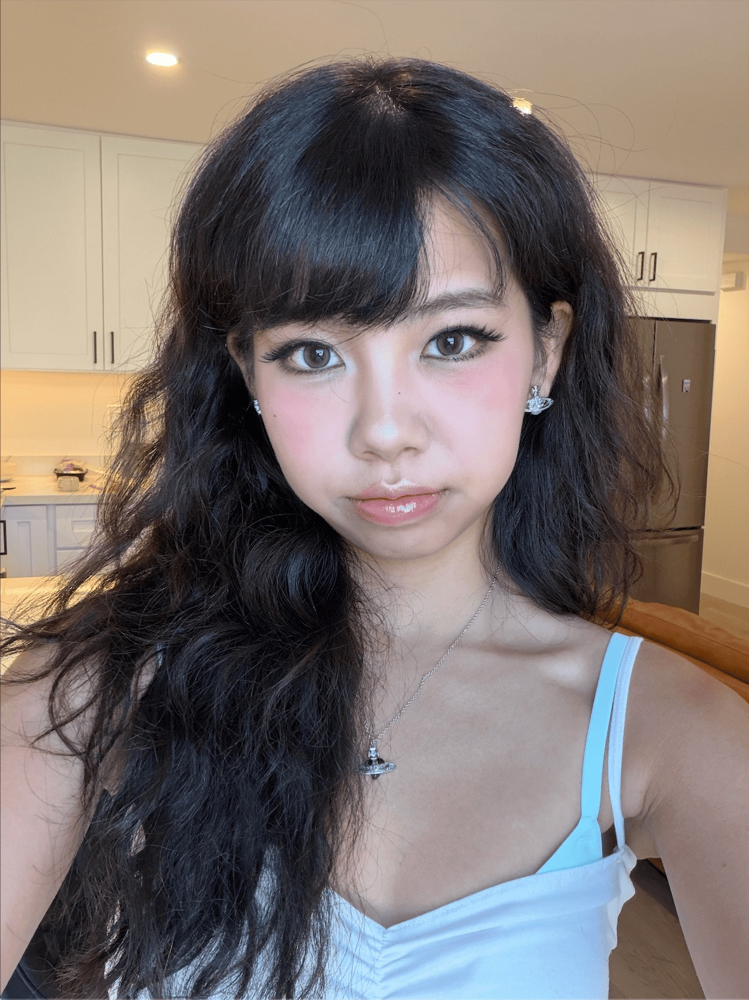
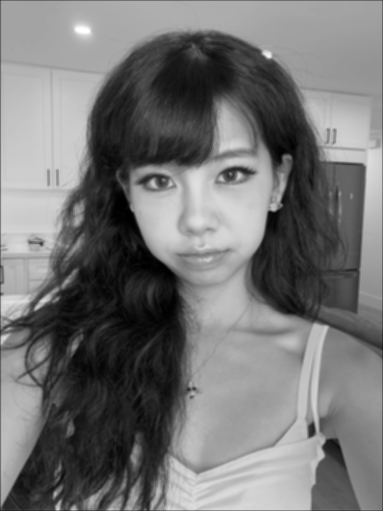
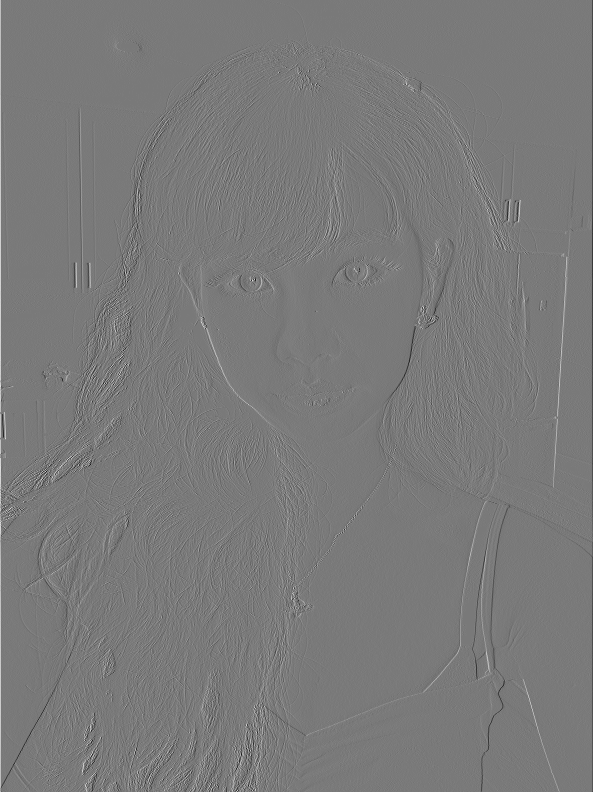
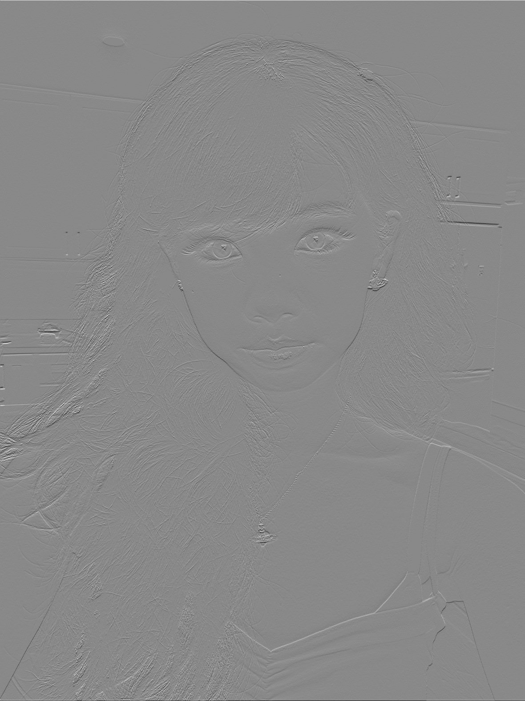

part 1.1 · convolutions from scratch
1. Four loops: I used two loops to visit every output pixel and two additional loops to visit every entry of the flipped kernel.
2. Two loops: I kept the two loops over the output pixels, but replaced the inner kernel loops with a NumPy window multiplication and sum.
3. SciPy and boundaries: My implementations use explicit zero padding and preserve the input dimensions.
(I ∗ K)[i, j] = Σu Σv Ipad[i + u, j + v] Kflip[u, v]




four_loops
def convolve_four_loops(image, kernel):
kh, kw = kernel.shape
h, w = image.shape
output = np.zeros((h, w), dtype=float)
kernel = np.flip(kernel)
pad_h, pad_w = kh // 2, kw // 2
padded = np.zeros((h + 2*pad_h, w + 2*pad_w))
padded[pad_h:pad_h+h, pad_w:pad_w+w] = image
for i in range(h):
for j in range(w):
for p in range(kh):
for q in range(kw):
output[i, j] += padded[i+p, j+q] * kernel[p, q]
return outputtwo_loops
def convolve_two_loops(image, kernel):
kh, kw = kernel.shape
h, w = image.shape
output = np.zeros((h, w), dtype=float)
kernel = np.flip(kernel)
pad_h, pad_w = kh // 2, kw // 2
padded = np.zeros((h + 2*pad_h, w + 2*pad_w))
padded[pad_h:pad_h+h, pad_w:pad_w+w] = image
for i in range(h):
for j in range(w):
window = padded[i:i+kh, j:j+kw]
output[i, j] = np.sum(window * kernel)
return outputscipy · convolve2d
from scipy.signal import convolve2d
output = convolve2d(
image,
kernel,
mode="same",
boundary="fill",
fillvalue=0,
)runtime comparison
| implementation | time | relative to SciPy |
|---|---|---|
| four loops | 0.987 s | 253× slower |
| two loops | 0.094 s | 24× slower |
| SciPy convolve2d | 0.0039 s | baseline |
The NumPy window operation makes the two-loop version about 10.5× faster than four explicit loops, but SciPy remains much faster because its convolution is implemented with optimized compiled routines. Both custom results match SciPy with np.allclose.
Measured on a 256×256 version of my selfie using the 9×9 box filter.